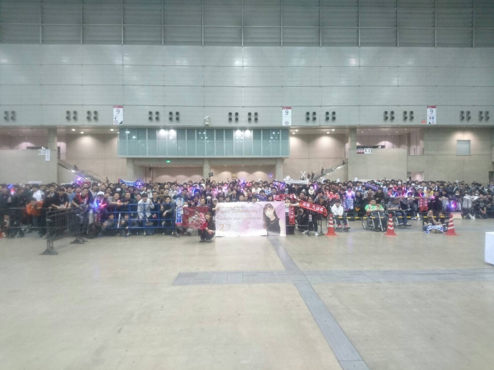
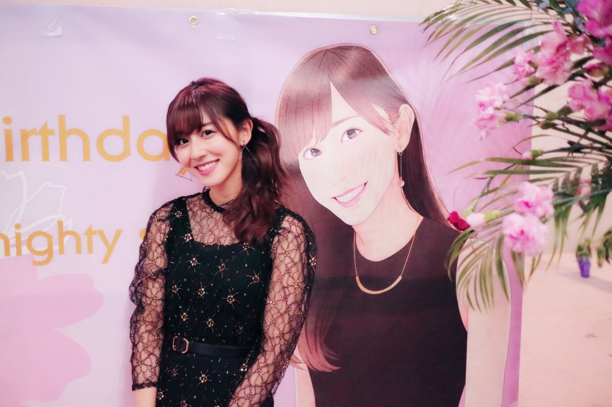
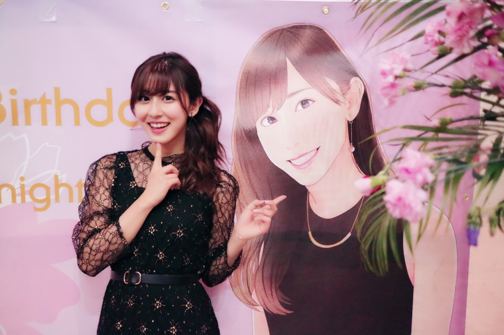
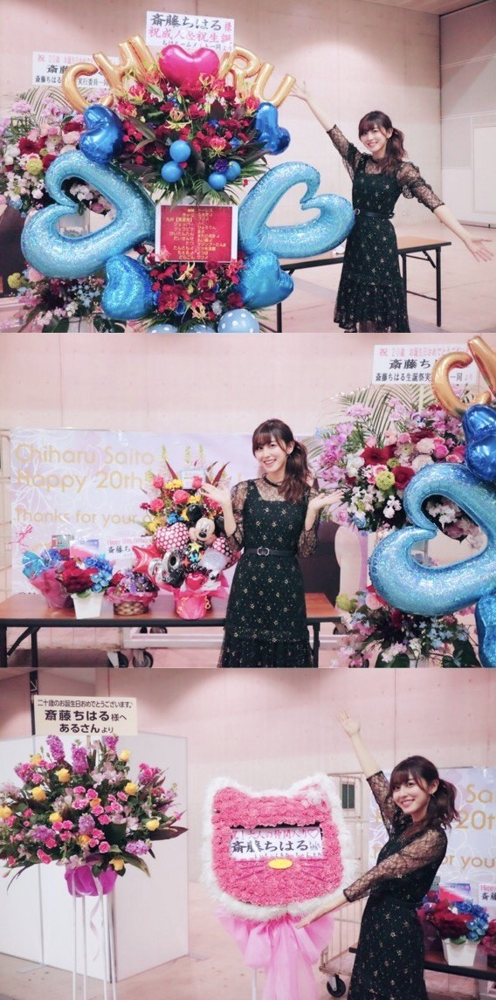

| 2017/03 04 Sat | 斎藤ちはる 生誕祭 |
今日は幕張メッセにて個別握手会、
そして私の生誕祭が行われました！！
来てくれた皆さん、
お祝いしてくださった皆さん、
本当にありがとうございましたヽ(；；)丿
生誕祭のセレモニーでは
皆さんがハッピーバースデーの歌を
歌ってくださって、
そしてその歌が終わって後ろ向いたら
知らぬ間に愛未がいて手紙を読んでくれました。
愛未からの手紙が嬉しくて嬉しくて
危うく泣きそうになりました...
私が思っていることを
愛未も思ってくれていて、
気が合うなぁ☺︎と改めて思いました。
大切な存在です。
愛未いつもありがとう\( ˆ ˆ )/
大好きだよ\( ˆ ˆ )/
愛未からのお手紙の後は
２０歳の抱負と、
皆さんへの感謝の気持ちをお話ししました！
言葉は用意していなくて、
その場で思ったこと、感じたことを
お話ししたのですが
伝わりましたか...？(> <)
皆さんに沢山の愛をいただいてるので
私はそれ以上の愛をお返し出来ればいいな☺︎
２０歳は素敵な女性に！
そして最後は写真を撮りました◎
皆さんちゃんと映れていますか〜？☺︎

そしてそして生誕委員の皆さん。
本当に感謝しています。
寝る間も惜しんで準備してくださったり、
お仕事や学校、勉強等が忙しいのに
生誕委員に携わってくださったり、
遠方からわざわざ来て下さったり、
素敵な装飾や祝花をくださったり、
輪を広げるために声かけやノベルティを
配ってくださったり。
ここに書いていない、私が知らない所でも
沢山動いてくださったんだろうと思うと
胸が熱くなります。
今日のために、私のためにしてくださったこと。
とっても嬉しいです。
感謝してもしきれません。
２０歳の生誕祭。
特別なものになりました。
なにより楽しかった！
そして皆さんの気持ちが嬉しかった！
幸せ者です。
ありがとうヽ(；；)丿
今日の為に横断幕まで...！

似顔絵書いていただけるって
とっても嬉しいヽ(；；)丿

そして物凄く似てるヽ(；；)丿

祝花も沢山！！
普通に生きていたら
こんなにお花頂けることないから
幸せだな〜って改めて。
これは5部終わりに撮ったんだけど、
4部の時にはあったお花が無くなったりしてて...
早く撮れば良かった(> <)残念...
レーンの装飾もとっても凄かったので
今日来れなかった皆さんにも
お見せしたい...！
また日を改めて☺︎
-------------------------------------------------♡
♬ ChihaMusic
「SISTER」back numberさん
生誕祭が終わった後の
退場曲で流してくださったこの曲。
大好きなback numberさんです！
この曲を選んでくださったことが
とっても嬉しい。
だって、
あなたの頑張りを知っているから。
あなたを見ている人はいるからね。
っていう歌だと思うから。
"泣かないで 君が費やした
すべてが意味を持つその時まで
あの雲の先できっと きっと"
この言葉とかすごいグッとくる。
頑張ろうと思える。
ありがとう。
今日は生誕祭のお話を☺︎
明日は握手会のお話をしようと思います！
そうだ、
コーポちはるへようこそって絶対言わないよ！笑
れなちめ〜笑
ちはるーむへようこそは卒業☺︎
おやすみ
斎藤ちはる